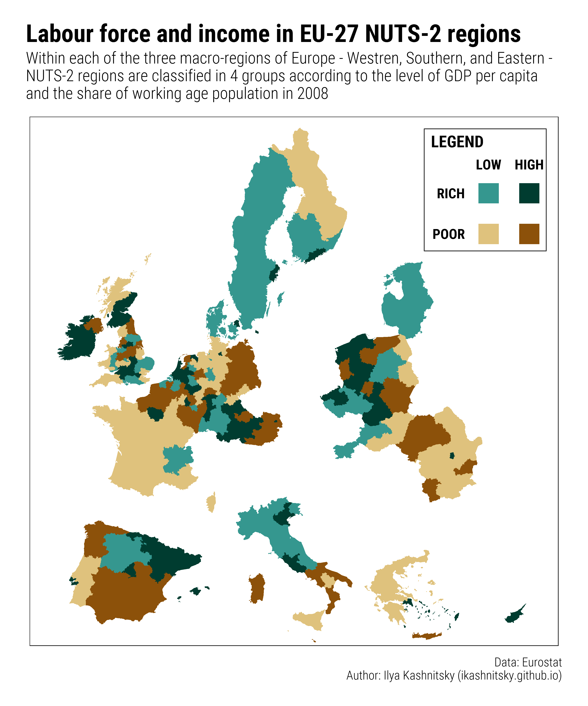

![]()
library(tidyverse) # version 1.1.1
library(extrafont) # version 0.17
library(ggthemes) # version 3.4.0
font <- "Roboto Condensed"
library(hrbrthemes) # version 0.1.0
# The code is tested on a PC-win7-x64
# R version 3.3.3
# load the prepared geodata and stat data
load(url("https://ikashnitsky.github.io/share/1704-map-hacking/map-hacking.Rdata"))
# fortify the spatial objects
bord <- fortify(Sborders)
fort <- fortify(Sn2, region = 'id')This is a very short post on mapping with ggplot2.
Quite often, mapping some data, we do not need to follow scrupulously the formal requirements to geographical maps – the idea is just to show the spatial dimension of the data. For instance, the network of rivers is not the most important information when we map the elections outcome. Thus, the simplified mapping allows quite some freedom in transforming the geodata. The classical example of such geodata transformation is the replacement and scaling of Alaska and Hawaii to be mapped alongside the mainland of the US. As one may see in this example, usually such geodata transformations utilize quite complex GIS tools in order to reposition an object in the coordinate system.
The interesting feature of mapping with ggplot2 is that, before the actual plotting, geodata has to be fotrified (ggplot2::fortify) – transformed to a simple dataframe object. Since fortified geodata is basically a dataframe, some simple transformations could be made really easily.
In my last paper, I needed to show a two-dimensional grouping of the European NUTS-2 regions in 4 quadrants according to GDP per capita and the share of working-age population (see Figure 8 in the preprint). In line with the study setting, I did the grouping separately for Western, Southern, and Eastern Europe. I decided that the most straightforward way to show that on map would be to visually separate the 3 subregions of Europe. The task is easily doable through triggering the fortified geodata object – see the code below.
First, the code to prepare the R session and load the (already prepared) data.
Next, I hack the geodata (long and lat variables) moving groups of NUTS-2 regions (Western, Southern, and Eastern Europe) apart. The appropriate values to move the groups of regions were found empirically.
# hack geodata to separate macro-regions
fort_hack <- fort %>%
left_join(df %>% select(id, subregion), 'id') %>%
mutate(long = ifelse(subregion=='E', long + 5e5, long),
long = ifelse(subregion=='S', long + 2e5, long),
lat = ifelse(subregion=='S', lat - 5e5, lat),
long = ifelse(subregion=='W', long - 2e5, long))Finally, we are ready to create the schematic map.
# create color pallete
brbg <- RColorBrewer::brewer.pal(11,"BrBG")
brbg4 <- brbg[c(4,9,2,11)]
# create the two-dim legend
ggleg <- ggplot()+
coord_equal(xlim = c(0,1), ylim = c(0,1), expand = c(0,0))+
annotate('rect', xmin = .45, xmax = .6, ymin = .1, ymax = .25,
fill = brbg4[1], color = NA)+
annotate('rect', xmin = .45, xmax = .6, ymin = .4, ymax = .55,
fill = brbg4[2], color = NA)+
annotate('rect', xmin = .75, xmax = .9, ymin = .1, ymax = .25,
fill = brbg4[3], color = NA)+
annotate('rect', xmin = .75, xmax = .9, ymin = .4, ymax = .55,
fill = brbg4[4], color = NA)+
annotate('rect', xmin = .05, xmax = .95, ymin = .05, ymax = .95,
fill = NA, color = "grey20")+
annotate('text', x = .35, y = c(.175, .475), vjust = .5, hjust = 1,
size = 6, fontface = 2, label = c('POOR', 'RICH'), family = font) +
annotate('text', x = c(.525, .825), y = .65, vjust = 0, hjust = .5,
size = 6, fontface = 2, label = c('LOW', 'HIGH'), family = font)+
annotate('text', x = .1, y = .9, vjust = 1, hjust = 0,
size = 7, fontface = 2, label = "LEGEND", family = font)+
theme_map()
# create the blank map
basemap <- ggplot()+
coord_equal(ylim=c(900000,5400000), xlim=c(2500000, 7000000), expand = c(0,0))+
theme_map()+
theme(panel.border=element_rect(color = 'black',size=.5,fill = NA),
legend.position = 'none')
# the main map
map_temp <- basemap +
geom_map(map = fort_hack, data = df, aes(map_id=id, fill=group))+
scale_fill_manual(values = brbg4[c(3, 1, 4, 2)])
# now combine the map and the legend
map <- ggplot() +
coord_equal(xlim = c(0,1), ylim = c(0,1), expand = c(0,0))+
annotation_custom(ggplotGrob(map_temp), xmin = 0, xmax = 1, ymin = 0, ymax = 1)+
annotation_custom(ggplotGrob(ggleg), xmin = 0.72, xmax = 0.99, ymin = 0.72, ymax = 0.99)+
labs(title = "Labour force and income in EU-27 NUTS-2 regions",
subtitle = "Within each of the three macro-regions of Europe - Westren, Southern, and Eastern -\nNUTS-2 regions are classified in 4 groups according to the level of GDP per capita\nand the share of working age population in 2008",
caption = "Data: Eurostat\nAuthor: Ilya Kashnitsky (ikashnitsky.github.io)")+
theme_ipsum_rc(plot_title_size = 30, subtitle_size = 20, caption_size = 15)And here is the result.
